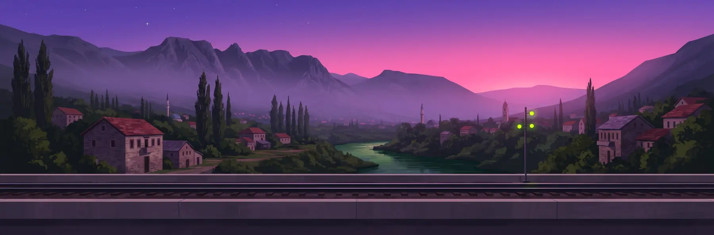
ZID · Sarajevo → Mostar
Halal bilo.
It's yours. Paint the train.
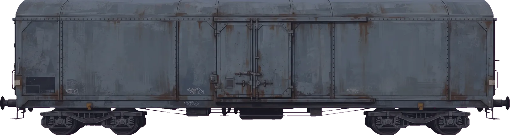
Povuci po vagonu i farbaj. Drag across the wagon to paint. With a keyboard: the arrow keys move the nozzle, Shift with an arrow moves it further, and holding Space sprays. Colours and paint styles are just below the wall.
Spray the wagon and it stops · ofarbaj ga i voz stane
Colour
ZID is a free page about Bosnian street walls. Spray the wall above, run the five-zone game from Bosanski Novi to the Old Bridge in Mostar, and pick up the slang you'll hear along the way.
- 5
- zones in one runzona, jedna trka
- ~20 m
- dive into the Neretvaskok u Neretvu
- 12
- street words to learnriječi s ulice
Igra · 5 zona · oko 4 minute
Sprej do Mostara
Run from Bosanski Novi to Stari Most. Paint concrete for points. Leave old stone, wood and other people's best pieces alone, and jump the bears. Finish with a dive into the Neretva.
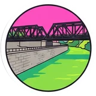
Zona 1 · Novi GradBosanski NoviWhere the Sana flows into the Una. The first Bosnian railway reached it in 1872, and the Una quay was built in 1906.
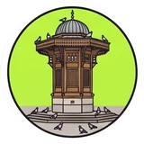
Zona 2 · SarajevoBaščaršijaThe old bazaar. On Kazandžiluk the coppersmiths still hammer copper.
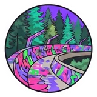
Zona 3 · iznad gradaTrebevićThe 1984 Olympic bobsled track, now an open-air gallery above the city.
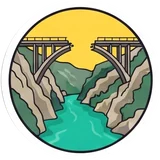
Zona 4 · Konjic → JablanicaNeretvaThe road and the railway follow this emerald river south to Mostar.
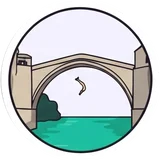
Zona 5 · MostarStari MostBuilt 1566, rebuilt 2004. Divers have jumped the roughly 20 m to the river since at least 1664.
Učitavam igru…Igra se nije učitala.
1/5 Bosanski Novi
0
Poš.
Igra · Bosanski Novi → Mostar
Sprej do Mostara
polahko? jok.take it easy? nope.
Trči od Bosanskog Novog do Starog mosta. Spreji beton, ne diraj staro, i na kraju skoči.
Run to the Old Bridge. Paint concrete, leave heritage alone, then dive.
Space / ↑ skok · drži miš na zidu ili F za sprej
Ko trči do Mostara?
Skače prvi, misli poslije.
Zona 1 / 5
Bosanski Novi
Novi Grad
Kej na Uni ne diraš.
Leave the Una quay alone.
Space za start
Pauza
Paused. Your run waits here.
Zona 1 / 5
Ajme. Pao si.
Limenke su prazne.
Out of cans. The zone restarts with the score you had when it began.
Aferim!
Majstor
Na glavu. Prava lasta.
Zidovi0
Komadi0
Poštovanje100
Skok0
Ukupno · total
0
Best in this browser: 0
Polahko, medo.
Vožnja je gotova
Uz Unu0m
Srušeno0
Zidovi0/20
Okreni telefon za veći ekran.
- Space ↑ skok. Hold for higher, press again in the air for a second jump.
- Miš drag across a wall, or hold F to spray in front of you.
- P pauza
Najbolji rezultat u ovom pregledniku: 0
Tabela · top 10
Ko drži zid?
- Učitavam tabelu…
Finish all five zones and dive, then type a name to get on the board. The weekly board starts fresh every Monday, so the crown is always up for grabs.
BHFZmajevi
PREPORUČENOR
Pošiljalac:
Primalac:
PRIORITET · BIH
raja
BUREKje samo s mesomsve ostalo je pita
ZDRAVOja sam
anezkko
10 U POLAsa lukom
AJMOZMAJEVI
Bosanska kahvane turska!
MOSTARSTARI MOST · 1566
rajaCREW
12 words · rječnik ulice
Street dictionary
Words you'll hear from the čaršija to the bridge. Press Spray it and the word goes up on the wall at the top of the page.
4 rules · zakon ulice
Street law
Every crew has rules. These four keep the paint on the right walls, and the game scores you on them too.
-
Rule1
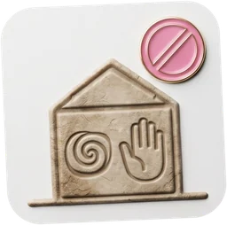
Don't touch the stećci.
Stećke ne diraš.
Medieval tombstones carved between the 12th and 16th centuries, on the UNESCO World Heritage list since 2016. Borrow their spirals and raised hands for your sketchbook. Leave the stone alone.
-
Rule2
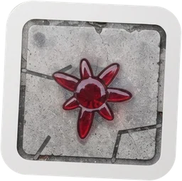
Sarajevo Roses stay red.
Ruže ostaju crvene.
Mortar scars in the pavement, filled with red resin where people were killed during the siege. Walk around them. Never paint them.
-
Rule3
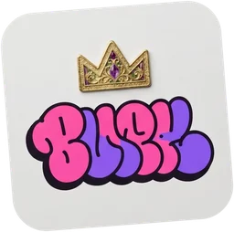
Don't go over a better piece.
Ne ideš preko boljeg komada.
If what you're about to paint isn't better than what's already there, find another wall.
-
Rule4
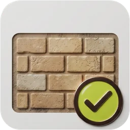
Find the right wall.
Nađi pravi zid.
Ask the owner, or paint where it's allowed. Painters work freely on the old Olympic bobsled track on Trebević, and festivals like Fasada in Sarajevo and Mostar's street art festival repaint whole facades.
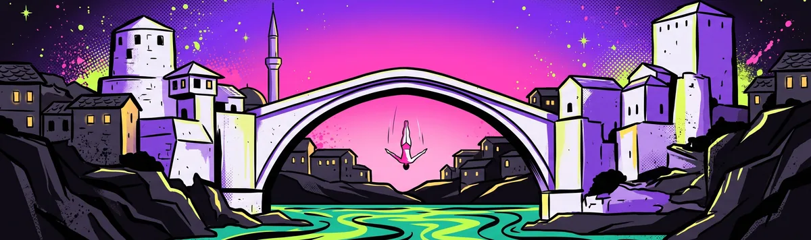
Zone 5 · Stari Most · 1566 / 2004
Take the dive.
Skoči.
About 20 m from the top of the arch into the Neretva. Paint your way from Bosanski Novi and the bridge is yours.
Play Spray to MostarMaking of · kako je nastao
About ZID
One page and a lot of walls: how ZID was made, who made which part, and where the facts come from.Jedna stranica i puno zidova: kako je ZID napravljen, ko je šta uradio i odakle su činjenice.
Who made it · ko stoji iza
ZID is made by Anezkko. More on Instagram.
ZID potpisuje Anezkko. Više na Instagramu.
[Your words, English: who you are, where you're from and why you made ZID. Two to four sentences.]
[Tvoje riječi, bosanski: ko si, odakle si i zašto si napravio/la ZID. Dvije do četiri rečenice.]
@anezkko on Instagram (opens in a new tab)The art · crteži
The game's world is pixel art: the runners, the bears, the walls and every town from Bosanski Novi to Mostar. The bigger illustrations (the Stari Most finale, the street-law stickers, the zone landmarks and the stećci) were made with Google Gemini, then cut out and fitted to the page. The wall you paint at the top of the page is by Anezkko.
Svijet igre je piksel-art: trkači, medvjedi, zidovi i svaki grad od Bosanskog Novog do Mostara. Veće ilustracije (finale sa Starim mostom, naljepnice uličnog zakona, znamenitosti zona i stećci) nastale su uz Google Gemini, a zatim su izrezane i uklopljene u stranicu. Zid koji farbaš na vrhu stranice potpisuje Anezkko.
[How you made the pixel art: by hand or with a tool, and how long it took.]
The music · muzika
There isn't a single recording in the music. Radio ZID's six stations (Sumrak, Polahko House, Neretva Nights, Čoček Turbo, Sevdah Deep and Bihać Slow) are written as code, and your browser plays them live. Sumrak, the calm one with no drums, fades in by itself on your first tap or click. Each zone of the game has its own tune, made the same way. No licensed tracks.
U muzici nema nijednog snimka. Šest stanica Radija ZID (Sumrak, Polahko House, Neretva Nights, Čoček Turbo, Sevdah Deep i Bihać Slow) napisane su kao kod, a tvoj preglednik ih svira uživo. Sumrak, ona mirna bez bubnjeva, sama se tiho upali na tvoj prvi dodir ili klik. Svaka zona igre ima svoju melodiju, napravljenu na isti način. Bez licencirane muzike.
The code · kod
One HTML page with plain CSS and JavaScript: no framework, no build step, hosted for free on GitHub Pages. Once it has loaded it works offline, and it installs as an app. Type: Bricolage Grotesque, Archivo, Martian Mono and Sedgwick Ave Display, all under the SIL Open Font License.
Jedna HTML stranica, običan CSS i JavaScript: bez frameworka i bez build koraka, besplatno na GitHub Pagesu. Kad se jednom učita, radi i bez interneta i može se instalirati kao aplikacija. Pisma: Bricolage Grotesque, Archivo, Martian Mono i Sedgwick Ave Display, sva pod SIL Open Font License.
[Thanks: friends, testers, anyone who helped.]
The facts · činjenice
Every memo on the Bihać ride links to its source, checked in October 2026. The war is told plainly and is never turned into points, targets or effects.
Svaka bilješka u vožnji kroz Bihać ima link na izvor, provjereno u oktobru 2026. O ratu se govori jasno i nikad se ne pretvara u bodove, mete ili efekte.
All 20 sources · svi izvori
- The Fethija Fethija · Wikipedia
- Sitting volleyball Sjedeća odbojka · Wikipedia
- The Bihać pocket Bihaćki džep · Wikipedia
- Stećci · UNESCO
- No Man’s Land Ničija zemlja · Wikipedia
- The siege of Sarajevo Opsada Sarajeva · N1
- The Old Bridge Stari most · Wikipedia
- Sarajevo Film Festival · Wikipedia
- The Tunnel of Hope Tunel spasa · N1
- The Charter of Ban Kulin Povelja Kulina bana · Wikipedia
- Ivo Andrić · nobelprize.org
- Srebrenica · United Nations
- The Sarajevo Haggadah Sarajevska hagada · Wikipedia
- The Dragons at the World Cup Zmajevi na Mundijalu · UEFA
- Vijećnica, the City Hall Vijećnica · N1
- Sarajevo ’84 · Wikipedia
- Sevdalinka · UNESCO
- White armbands Bijele trake · N1
- Vladimir Prelog · nobelprize.org
- Jasmila Žbanić · Berlinale